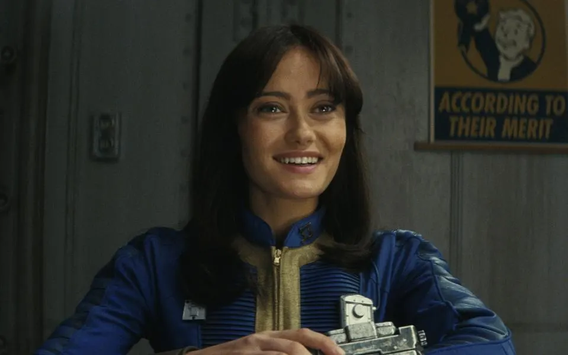

Lucy is an active contributor to the well-being of her community, such as doing Vault
maintenance using her repair
skills, or gardening. She relishes being challenged, such as shooting with rifles, doing wrestling, fencing and
gymnastics. However, she acknowledges her aim with guns is not always the best. She enjoys reading, watching movies
and learning about history.

She has been described as being kind, charming, plucky, and strong. Lucy strongly believes in the Golden Rule, which
is to treat others as one wishes to be treated.Lucy is confident that she can improve things, fueled by her optimism
of the retro-America she was raised to admire. An optimistic, hard-working person, Lucy has an inherent belief that
humanity is generally good and that there is goodness in the world that can prevail over evil. However, she
struggles to maintain this belief the more she explores the wasteland, becoming more cynical as she becomes aware of
suffering, violence and death. Her personality goes through a transformation when she finds herself betrayed and
attacked by humanity, making her tougher and wiser, even if she becomes emotionally overwhelmed sometimes.
< back
{kind=link}